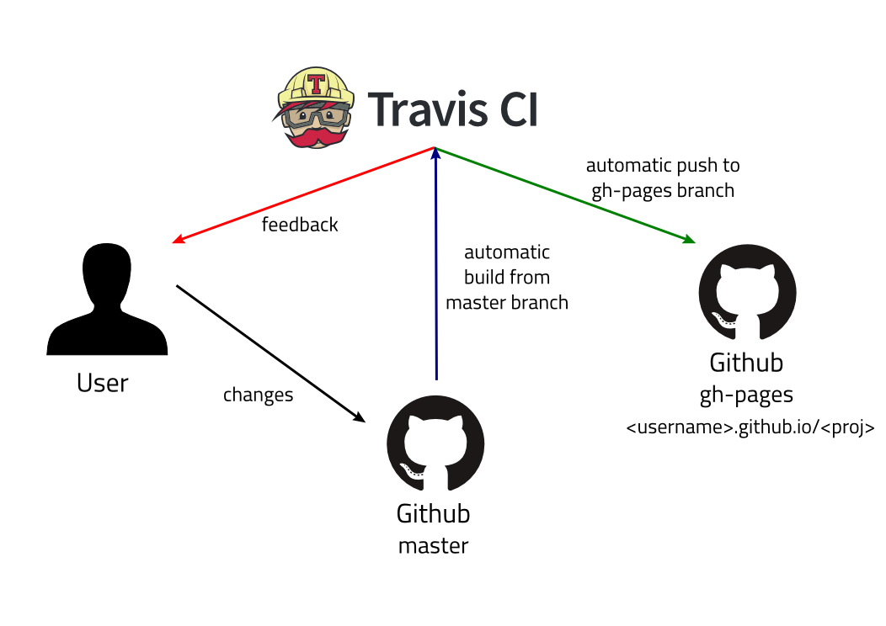
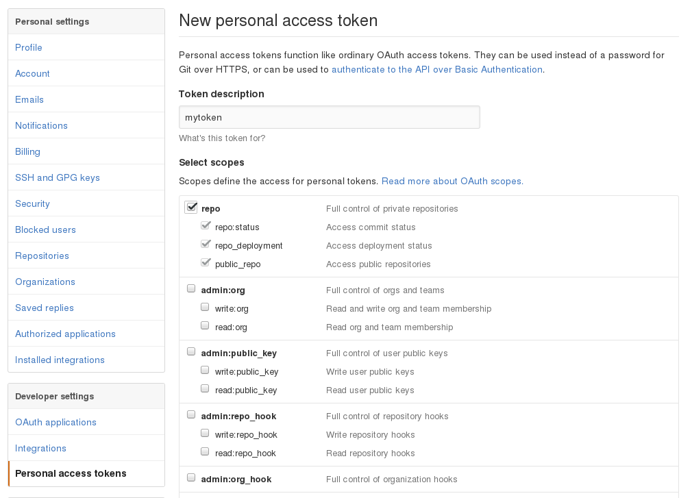
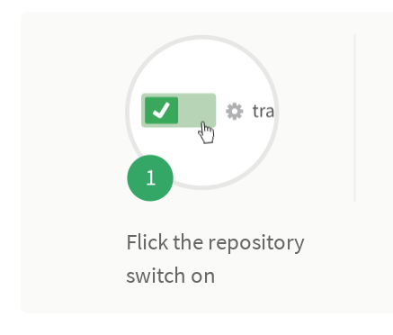
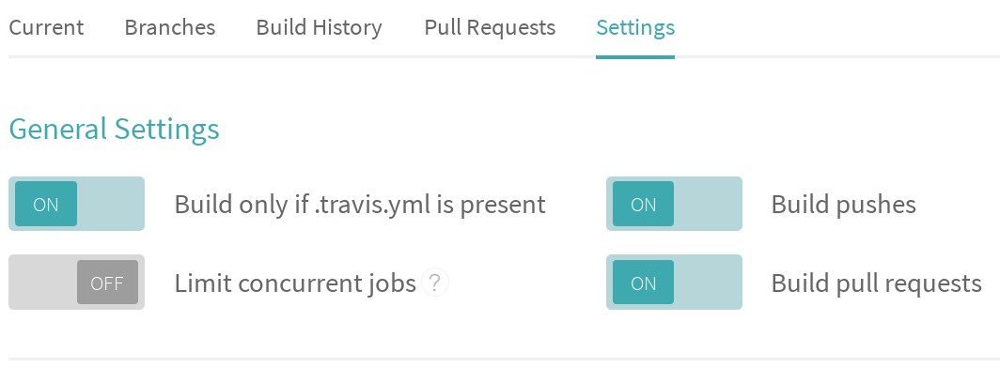

Hosting blog using Github and Travis
Posted on 03 November 2016 in Technology
Story so far
It is already discussed about how one can write their thoughts out just in a text document in the previous article here. The topics, what is Pelican, then the commandline to kickstart a blogging site locally are discussed. In this article, hosting the source code of the blog and the blog using github and automate the build using Travis-CI will be explained.
Github hosting
An enormous number of projects hosted in Github. It is a wonderful platform for anyone to place their code over there. Options are available to make the project public as well as private. For an instance, this blog is available as a public Github project. This is written as a text document and Pelican is used to convert the text document into a html document applying the theme on it. FYI, this blog is under MIT license, which means it is open source.
For those who are familiar to git, can jump in to handle checking in and checking out the source for the blog easily. For the newbies to git, please refer the cheat sheet to start with git usage here.
The Flow
I'm going to introduce a new term here. Github along with this Travis is going to do some magic, called "Continuous Integration". The user has to write their blog content and push it to their corresponding repository. Once this is done a few settings here and there will make the Travis CI to pull the content from master branch of the user's repository and convert them into web articles with a theme mentioned in the Pelican configuration. Later the output will be pushed to the gh-pages branch of the same repository. The below illustration show how things are happening.

Travis CI uses the Github account to signing in. https://travis-ci.org is the url to access Travis. In the user repository, a file '.travis.yml' needs to be added. So that a build will be triggered every time a commit is done on the repository. The sample file is below.
language: python python: - '2.7' script: echo "Hello World!"
Travis provides a stable version of Ubuntu machine instance, in which the project dependenices are installed and built, the way it is mentioned in the '.travis.yml' file.
What goes where?
The user has to create an account and a repository in Github. The link https://github.com/new will create a repository or clicking the "New Repository" button in the home page will create it. Proceed to fill up the different information like repository name, license, readme text and so on. After this clone the repository to the local machine using git commands.
~$ git clone https://github.com/<username>/<project-name>.git
After this, the user has to make some settings. These are kind of a deal between Travis and Github. All of the user's content will fall into the 'master' branch in their Github repository. The user has to create an empty branch named 'gh-pages' in the repository. The user has to install Travis. This can be done using "gem", since it is a ruby package. For a Linux based system, the following commands will install ruby and travis along,
~$ sudo apt-get install ruby-full ~$ sudo gem install travis
After this is done, the user can go ahead to Github settings and create an access token, from the url https://github.com/settings/tokens/new. The name for the token as description has to be provided and full control to the repo needs to be enabled by clicking the first checkbox as below.
Then clicking the generate token button will jump to a page with the generated token. The token has to be saved somewhere. If it is not saved, no armagedon ahead; it can be regenerated. But it has to be updated in every application/deployment, in which the token has been used. Now the token has to be passed to the Travis cli to encrypt it and add it to the '.travis.yml' automagically.
~$ travis login Shell completion not installed. Would you like to install it now? |y| y We need your GitHub login to identify you. This information will not be sent to Travis CI, only to api.github.com. The password will not be displayed. Try running with --github-token or --auto if you don't want to enter your password anyway. Username: <username> Password for <username>: ************ Successfully logged in as <username> ~$ ~$ ~$ travis encrypt GITHUB_TOKEN=b892442cfd48a31b41eb0f09c72224a1a0edd880 Detected repository as <username>/<project>, is this correct? |yes| Please add the following to your .travis.yml file: secure: "pAHsoCLYYsZwMQJyNAae2riKF+K5QSty3cEYja/ESXddW8/yjS1xRXzVlcLPZlisqy1nBe9ZM/jggTbLdNYgtxg3v0hBj88TWD/CMt3WlgfUdEF5qOgs61GAB6vDgXFT/JA2azkoaVdKRPExRw9qGhnkzIJcZAzmMOD46cr37Zuw8ZHcCvVPBxxDkqS1YAePe5xK7i1x5XaC49WyOcEblnQN+eWBn7YjcT4IXNA2kZCJ85rZ/AYmWo8aICp8G/gP3QtzDFs1heORJiFM02q6hX+MVbDVcl1F9NXyoCVU6TiJSj6Qg8yM56XOqQZG6HOgJtJBhZXy8YG5hIE4wCoGx+WTdgqjd2JlhEaiUYF/b1ooKcMwtkkPOMNnQiKtrD5b5XRmqmqg5qAouavjN2BY+lZQdY7Hpn/JCJm3rL1gNhDTsNgaIc59H0sxlMfyLfOZeFsHhiaxoR8Ts4N+pzVqiQChjTO9CLulGm7qDPzJkAEjPPS/SsVqVTllbaY/HFfyEaFIt+jA5UQobxxj4IT3l2G/PF8oZwEbXIpEaJHr8sT7ux7MqlOLlsLrItMjAzNMm4P9Z4kNN4N12aDjellAdbAPZAhqnugZ0aLmHQklj141a4BnSHHuCSocFUHuN/ZDVkHiFXUvTdmzeSOUnhMnvVl4ho+3eSYOsznPiuSqc54=" Pro Tip: You can add it automatically by running with --add. ~$ ~$ ~$ travis encrypt GITHUB_TOKEN=b892442cfd48a31b41eb0f09c72224a1a0edd880 --add ~$
That's it. An example '.travis.yml' is as follows, it has the secure environment variable that enables travis to automatically push output from building the Pelican blog to 'gh-pages' branch.
language: python python: - '2.7' before_install: - sudo apt-get update -qq install: - pip install -r requirements.txt script: - make clean - make html env: global: - secure: pAHsoCLYYsZwMQJyNAae2riKF+K5QSty3cEYja/ESXddW8/yjS1xRXzVlcLPZlisqy1nBe9ZM/jggTbLdNYgtxg3v0hBj88TWD/CMt3WlgfUdEF5qOgs61GAB6vDgXFT/JA2azkoaVdKRPExRw9qGhnkzIJcZAzmMOD46cr37Zuw8ZHcCvVPBxxDkqS1YAePe5xK7i1x5XaC49WyOcEblnQN+eWBn7YjcT4IXNA2kZCJ85rZ/AYmWo8aICp8G/gP3QtzDFs1heORJiFM02q6hX+MVbDVcl1F9NXyoCVU6TiJSj6Qg8yM56XOqQZG6HOgJtJBhZXy8YG5hIE4wCoGx+WTdgqjd2JlhEaiUYF/b1ooKcMwtkkPOMNnQiKtrD5b5XRmqmqg5qAouavjN2BY+lZQdY7Hpn/JCJm3rL1gNhDTsNgaIc59H0sxlMfyLfOZeFsHhiaxoR8Ts4N+pzVqiQChjTO9CLulGm7qDPzJkAEjPPS/SsVqVTllbaY/HFfyEaFIt+jA5UQobxxj4IT3l2G/PF8oZwEbXIpEaJHr8sT7ux7MqlOLlsLrItMjAzNMm4P9Z4kNN4N12aDjellAdbAPZAhqnugZ0aLmHQklj141a4BnSHHuCSocFUHuN/ZDVkHiFXUvTdmzeSOUnhMnvVl4ho+3eSYOsznPiuSqc54= after_success: - bash deploy.sh
The above '.travis.yml' file is explained as,
| language | the language that this project uses, Travis will install it. |
| python | since this project uses python, followed by version 2.7. |
| before_install | things to be done before installing any packages. |
| install | list of packages to be installed. |
| script | steps/commands to be used to build this project. |
| env | list of environment variables used by Travis. Here secure. |
| after_success | steps/scripts to be run after build passes. |
Note that there is a line at 'after_success' step. The script is as follows used to push the built output from the Travis work area to Github.
#!/bin/bash set -o errexit -o nounset if [ "$TRAVIS_BRANCH" != "master" ] then echo "This commit was made against the $TRAVIS_BRANCH and not the master! No deploy!" exit 0 fi rev=$(git rev-parse --short HEAD) cd output git init git config --global user.name "<username>" git config --global user.email "<username@example.com>" git remote add upstream "https://$GH_TOKEN@github.com/<username>/<project-name>.git" git fetch upstream git reset upstream/gh-pages touch . git add -A . git commit -m "rebuild pages at ${rev}" git push -q upstream HEAD:gh-pages
Okay! Now the user has to login Travis site and configure the build settings over there. In the link, https://travis-ci.org/profile/username select the project to be built, a toggle button as below,
Then enable the project build settings as follows,
Happy Hosting!
This is the end of the story. With all these settings in place, a blog or any project can be deployed as wished using the duo, Github and Travis. This blog is available in Github, so that anyone who wants to have a reference setup can take a look at that to start with.
Cheers.
Comments